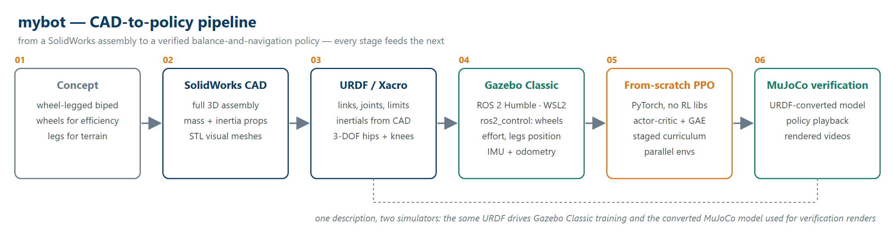
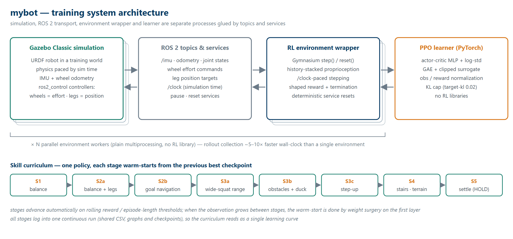
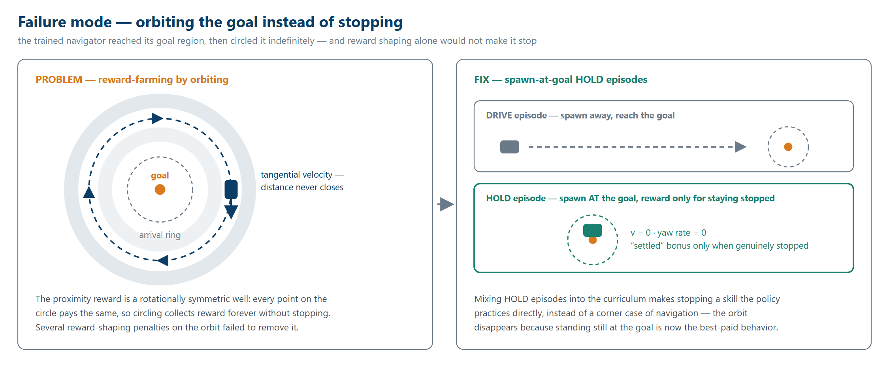
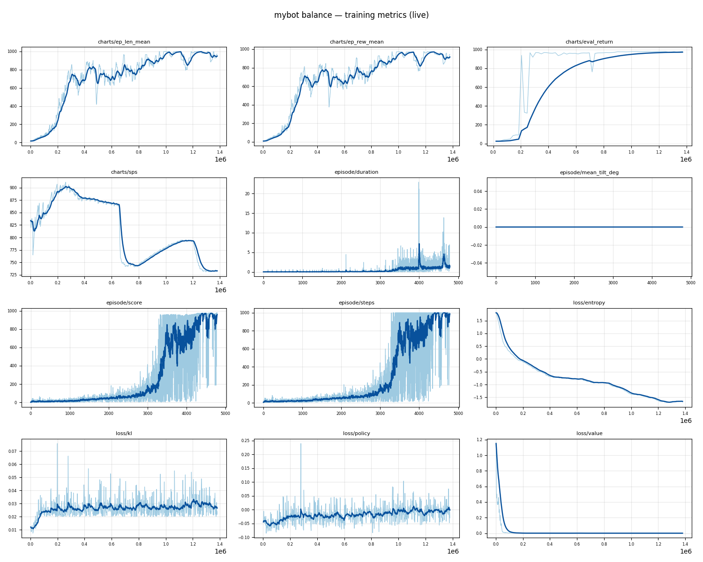

mybot — wheel-legged bipedal robot
A two-wheeled, wheel-legged bipedal robot that learns to balance on its wheels and drive to a goal point — trained with a from-scratch PPO (no Stable-Baselines3, no RL library), written from the equations up in PyTorch.
Project goal
mybot has two independent legs (a 3-DOF hip plus knee each) ending in driven wheels. With its centre of mass above the wheel axle the base is underactuated and statically unstable — standing still is already a control problem, exactly like a Segway. The learning problem is continuous-action policy optimization under partial observability: the controller sees only proprioception (IMU tilt and angular rates, wheel and joint positions and velocities, and its own previous action), not privileged simulator state, and must produce torque and joint-target commands that keep the robot upright while it drives, reaches goals, and eventually handles obstacles and terrain.
The second, deliberate goal is to build the whole learning stack from first principles: the PPO algorithm is hand-written in PyTorch — actor-critic, advantage estimation, surrogate objective, normalization, parallel rollout collection, all of it — with no RL library anywhere in the loop. The long-term target is sim-to-real transfer: a staged curriculum in simulation that ends with a policy conditioned only on observations a real robot can measure.
From idea to simulation
The concept trades between two locomotion modes: wheels are efficient and fast on flat ground, while individually actuated legs allow squatting, stepping, and climbing once balance is solved. The mechanical design was done as a full SolidWorks assembly, and the simulation model is exported from it rather than hand-tuned: links, joints, and joint limits come out as a URDF/Xacro description, with inertial parameters taken from the CAD mass properties and STL meshes for geometry. Each hip is built up to 3 DOF (yaw, roll, pitch) plus a knee, so the legs are real articulated chains, not props.
That URDF is imported into Gazebo Classic under ROS 2 Humble (running on WSL2). Actuation and sensing are defined through ros2_control: the two wheels expose an effort interface (torque commands), the hip and knee joints a position interface, and the robot carries an IMU plus wheel odometry — deliberately the sensor set a physical robot could carry. The training world is flat and runs faster than real time, with a state plugin for deterministic resets. Finally, the same URDF is converted into a MuJoCo model that is used to verify and render the learned behaviour independently of the training stack.

Implementation & architecture
The system is a chain of separate processes glued by ROS 2 topics and services. Gazebo
simulates the robot and publishes sensor data; a Gymnasium-style environment
wrapper turns that stream into an RL interface — it stacks a short history of
proprioceptive frames into the observation, paces step() on the simulation
/clock, computes the shaped reward and termination, and resets deterministically
through pause/reset services. Actions flow back down as wheel torque commands (up to the
±20 Nm actuator limit in the URDF) and, in later stages, leg position targets.
The control architecture is a classical + RL split. The eight leg joints are held at a stance posture by position servos — a conventional control layer that turns the body into a clean inverted pendulum — while the learned policy commands the wheel torques. As the curriculum advances, the leg targets are handed to the policy too, in a deliberately small range around the stance so that exploration jitter cannot topple the robot.
The learner is a hand-written PPO: an actor-critic MLP with a learnable
log-std, generalized advantage estimation, a clipped surrogate objective, and running mean/std
normalization on both observations and rewards. The single most important stabilizer was a
KL cap (--target-kl 0.02): without it the KL divergence blew up
to 0.3–1.0 between updates, the policy over-updated and degraded; with it (plus
a small entropy bonus against entropy collapse) training converges smoothly. Rollouts are
collected by N parallel environment workers using plain multiprocessing
— still no RL library — which trains roughly 5–10× faster in wall-clock
than a single environment.
On top sits a skill curriculum: balance, then balance with actuated legs, then goal navigation, then wide-squat rebalancing, obstacles and ducking, step-up, stairs and terrain, and finally a settle stage. Each stage warm-starts from the previous best checkpoint (with weight surgery on the input layer when the observation grows), advances automatically on rolling reward and episode-length thresholds, and logs into one continuous run so the whole curriculum reads as a single learning curve. The reward philosophy is consistent throughout: a dense alive bonus minus penalties on tilt, drift, yaw rate, and effort, extended per stage — the yaw-rate term alone is what stops the balancer spinning in place (~230°/s without it, a few degrees of heading error with it), and the goal stages add potential-based progress, face-the-goal, arrival, and station-keeping terms.

Critical challenges
Episodes that ended after one step
The first training runs never learned anything: episodes terminated after roughly
one step. The environment paces itself on the simulation /clock,
and a mismatch between the clock rate and the real-time factor meant each environment step
covered so much simulated time that the unstabilized robot had already fallen before the policy
ever saw a second observation — PPO had no gradient signal to climb. Fixing the
/clock rate configuration was the breakthrough: episode length jumped from 1 to
100+ steps and balance learning finally started. The lesson generalizes — in a
sim-in-the-loop RL stack, the time plumbing is part of the algorithm.
Reward hacking, and the leg unlock that toppled everything
The very first goal-navigation policy solved balance by splaying its legs into a wide static split — free lateral stability, but exactly not the point of actuating the legs. A posture penalty keeping the legs near their stance removed that shortcut. But unlocking the legs as a real 8-D action, adding a goal, and banning the shortcut all at once made the robot fall within a few steps every time: fresh exploration noise on eight joints is too destabilizing to layer onto a brand-new task. The fix was to split the stage — first re-learn balance with actuated legs and no goal, then warm-start that policy and add the goal — after which navigation is learned while keeping balance from step one.
Orbiting the goal instead of settling
Much later in the curriculum, the trained navigator developed a subtle failure: it would reach its goal region and then circle it indefinitely instead of stopping. The cause is geometric: the proximity reward is a rotationally symmetric well, so a robot circling inside it collects reward forever without ever closing the remaining distance. Several rounds of reward shaping — penalizing the orbiting motion in various ways — failed to remove the behaviour. What worked was changing the data instead of the reward: spawn-at-goal HOLD episodes were mixed into the curriculum, where the robot starts already at the goal and is rewarded only for staying genuinely stopped. Stopping became a skill the policy practices directly rather than a corner case of navigation, and the orbit disappeared.

Terrain generalization and out-of-distribution obstacles
The obstacle and terrain stages exposed two distinct problems that at first looked like one. Rough-terrain driving was a real generalization failure of the policy, while the ducking failures traced back to test obstacles that were simply out-of-distribution for the curriculum the policy had seen — compounded by a coverage gap in the ray sensor. Both are being addressed together: rehearsal episodes mix earlier-stage scenarios into later training so old skills are not forgotten while new ones are learned, and the exteroceptive input was widened to a 24-ray configuration so obstacles are sensed before they are hit. This round is implemented and smoke-tested; the terrain stage is being retrained with it.
Results & analysis
The balance run below tells the whole convergence story. Mean episode length and mean episode reward move together (the reward is dominated by the alive bonus): both sit near zero for the first ~0.15 M steps while exploration is still random and the robot falls almost immediately, climb steeply between ~0.2 and 0.3 M steps once the policy discovers active stabilization, and then grind upward through a noisy band toward the 1000-step episode cap. The dips in that band — around 0.5–0.7 M and again near 1.15 M steps — are the visible cost of on-policy exploration: updates that trade away some stability are pulled back by the KL early-stop before they can destroy the policy, and the curve recovers each time. The deterministic evaluation return is the curve to trust: it rises smoothly and saturates near the maximum, which is why checkpoint selection is driven by evaluation rather than the noisy training episodes.

The loss panels explain why it converges. Policy entropy decays steadily from ~1.75 to
~−1.6 as the controller sharpens from exploratory to confident — a controlled decline,
not a collapse, thanks to the small entropy bonus. The approximate KL hovers around
0.02–0.03 for the entire run: that is the target-kl early-stop doing its job,
holding every update near the trust-region cap instead of letting KL run to the 0.3–1.0
range that degraded early experiments. The value loss collapses quickly and stays flat, which is
what reward normalization buys. In the per-episode panels (~5,000 episodes) the breakthrough is
abrupt: scores are flat until roughly episode 3,000, then explode into a wide band mixing full
1000-step successes with early falls, and the band narrows as the policy consolidates.
The videos show what the curves cannot. The balance clip is a MuJoCo verification render of the learned policy — an independent physics model converted from the same URDF — holding the full 20-second episode without drifting or spinning: the yaw-rate reward term shows up here as a steady heading rather than the ~230°/s pirouette earlier policies produced.
The navigation clip shows the full stack: the robot accelerates toward a randomized goal marker, faces it, decelerates on approach, and holds station inside the goal region while still balancing. On held-out evaluation episodes, 9 of 10 runs arrive and station-keep, with a mean end-distance of 0.16 m from a mean starting distance of 1.47 m — while balancing through the full episode.
What remains weak is honest to state: sequential wheel-lifting onto steps (the step-up stage) is only partially learned, terrain generalization is mid-retraining with the rehearsal and 24-ray changes, and every number on this page is simulation-only — no hardware has run this policy yet.
Future work
- Finish the terrain/stairs retraining with rehearsal episodes and the 24-ray sensor, tracking per-mode metrics (flat, duck, step, terrain) instead of a single average.
- Consolidate step-up — make sequential wheel-lifting onto ledges reliable enough to chain into stair climbing.
- Rebalance the drive/hold episode mix in the settle stage so that learning to stop does not cost navigation performance.
- Domain randomization over mass, friction, and actuator latency to prepare the policy for transfer.
- Switch to IMU-only observations — drop the remaining privileged state terms (the IMU sensors are already defined in the model) as the last step before sim-to-real.